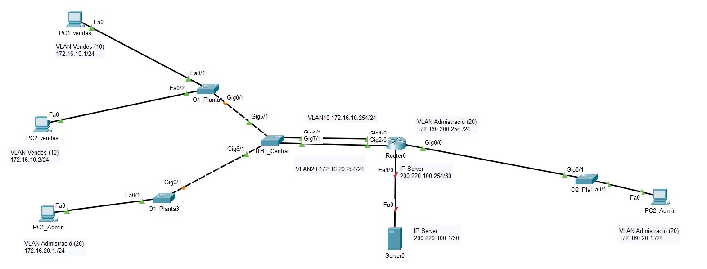

Segmentación de Red (VLANs) y DHCP
Diseño e implementación de una arquitectura de red corporativa segmentada. El proyecto separa lógicamente los departamentos mediante VLANs, gestiona el tráfico con enrutamiento Inter-VLAN y automatiza la asignación de direcciones IPs.

💡 Desafíos Técnicos Resueltos
Optimización de la seguridad y el rendimiento de la red mediante segmentación lógica. Descarga el archivo fuente o despliega los detalles a continuación.
-
🏢
Segmentación Lógica (VLANs)
Creación de redes virtuales separadas para aislar el tráfico y mejorar la seguridad:
- 🔹 VLAN 10: Departamento de Ventas.
- 🔸 VLAN 20: Departamento de Administración.
- Implementación en switches de planta (01_Planta1, 01_Planta3) y central (ITB1).
-
🔀
Enrutamiento Inter-VLAN
Configuración de "Router-on-a-Stick" en el Router Central para permitir la comunicación controlada entre las VLANs y el servidor compartido, utilizando subinterfaces 802.1Q.
-
⚙️
Automatización (DHCP Server)
Despliegue de servicio DHCP en el router Cisco para la red de Ventas. Se configuraron exclusiones para las primeras 20 IPs (reservadas para estáticos) y asignación dinámica para nuevos hosts.